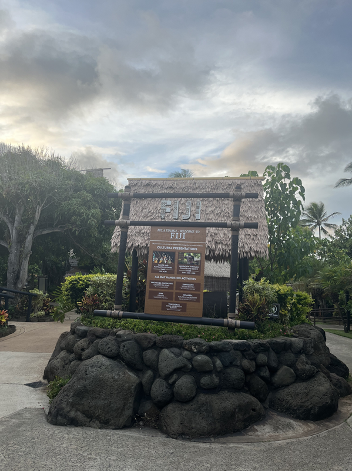

"Fiji"
The greeting word: "Bula Vinaka"Fijians are my favorite people. I love their greeting word. Their greeting word "Bula - Life, Vinaka- to Wish" actually means wishing you good life or good health. They are very nice and welcoming people. They are not a part of polynesia, they are in Melanesia which means black. People from melanesia have darker skin. However, their culture was very close to the other polynesian cultures, they were selected to ve presented at the Polynesian cultural center.
